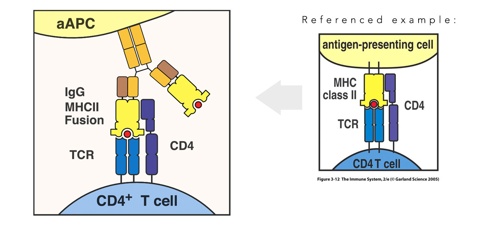

Client: Johns Hopkins Graduate Student - Baltimore, MD
Project: Thesis Research Graphics
Role: Graphic Design, Illustration
Tools: Pencil & Paper, Photoshop, Affinity Designer
The client in this case is a graduate student who required graphics for scientific publications and presentations. The graphics I designed were for several projects within the realm of fusion protein design and construction. Fusion protein production involves the use of genetic engineering techniques to “fuse” two or more gene fragments that are associated with unique functions. The combination of such entities results in a new and synthetic fusion protein that has a hybrid function (the function relating to the fragments it was constructed from). During this project, I was tasked with visually communicating complex scientific concepts with an emphasis on accuracy, clarity, and simplicity.
On the left we see an example of an MHC II/antibody fusion protein engaging and activating a T cell. On the right we see the conventional diagram for T cell engagement by MHC II (Garland Science 2005), which I referenced in order to model the fusion protein according to the client’s specifications. Scientific language is a highly developed form of dialect intended to communicate biological elements to other scientists by using agreed upon symbols and shapes that may seem arbitrary to a layman but are highly recognizable to a scientist. For instance, notice the shape and number of domains on the MHC II vs the antibody vs the TCR surface receptor—these graphic elements communicate to a scientist the identity of these molecules even in absence of labeling.

Here we see a diagram explaining the mechanism behind graft rejection, mediated by shape incompatibility between an MHCI and a TCR. On the left we see the lock and key interaction between MHC I and TCR, resulting in recognition of “self” cells; while on the right we see recognition of a cell as foreign due to biophysical incompatibility between these two molecules. To achieve visual separation between the two cell types, I chose colors around the yellow spectrum for molecules belonging to the top cell and colors around the blue spectrum for molecules belonging to the T cell.